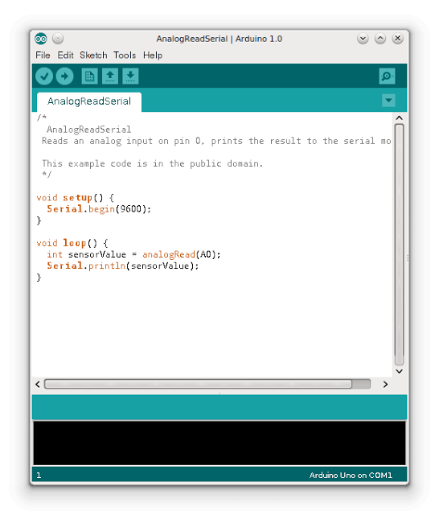
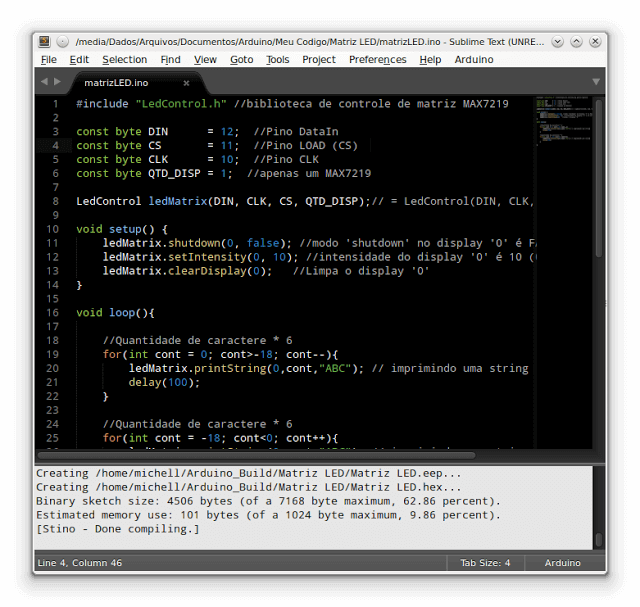

Há algum tempo, tipo o prazer de participar de um minicurso abordando o básico sobre o desenvolvimento usando a plataforma Arduino. Após a instalação das bibliotecas necessárias, também foi necessário instalar a Arduino IDE, um ambiente de desenvolvimento próprio para programação nessa plataforma.

Apesar da IDE oferecer suporte a todos os recursos do Arduino, o seu editor de texto era simples demais, sem funções que são comuns a muitos editores, como auto-completar, fechamento automático de {} e entre outras coisas básicas. Uma vez que eu estou acostumado a editores de texto mais avançados, acabei me sentindo bastante desconfortável e parti em busca de outra alternativa. Foi então que descobri a combinação SublimeText + Stino.
O Sublime Text um editor de texto e IDE bem conhecido por programadores. Possui muitos recursos bacanas como auto-completar, suporte a múltiplas linguagens de programação e uma infinidade de plugins, temas e possui versões para diversos sistemas operacionais. O Sublime Text pode ser baixado aqui. Para Linux, temos um pacote com a extensão .deb. Para instalá-lo basta dar dois cliques no arquivo, inserir a senha de administrador e seguir com a instalação normalmente.
Com o Sublime Text instalado, vamos dar prosseguimento a instalação do plugin Stino, para suporte ao Arduino.
Inicialmente, vamos instalar o plugin que permite a instalação de packages no Sublime Text. Caso já o tenho instalado, pode ignorar estas etapas.
Execute o Sublime Text e vá em: View -> Show Console.
Na área inferior da janela do Sublime Text, irá aparecer um campo de texto onde você deve colar o código encontrado aqui, de acordo com a versão do Sublime Text. Após copiar e colar o texto no campo de texto do Sublime Text, tecle Enter. Após a instalação, reinicie o Sublime Text.
Depois de reiniciar o Sublime Text, clique no menu: Preferences -> Package Control. No campo de texto Package Control, digite: Install Package.
Aguarde alguns segundo e irá aparecer outro campo de texto para você entrar com o nome do package. Digite Arduino e irá aparecer um package chamado Arduino Like IDE. Selecione-o e aguarde alguns segundos para a instalação completar (você pode verificar o progresso da instalação na área inferior da janela do Sublime Text). Após completada a instalação, reinicie o Sublime Text.
Depois de reiniciar o Sublime Text, vá em Preferences e selecione a opção Show Arduino Menu (se já não estiver selecionado). Fazendo isso, um novo menu chamado "Arduino" surgirá ao lado do menu Help.
Para o próximo passo, clique em: Arduino -> Preferences -> Select Arduino Application Folder.
Insira a localização da instalação das bibliotecas do Arduino no seu sistema. A minha está em /usr/share/arduino.
Uma que você tenha escolhido o diretório correto, uma mensagem do tipo
Arduino x.x.x is found at /usr/share/arduino
irá aparecer.
Agora você pode desenvolver seus programas usando o Sublime Text e utilizar as opções do menu Arduino, como compilar, fazer upload do seu código, selecionar o modelo do Arduino, a porta usada para comunicação e todos os outros recursos que a Arduino IDE possuía e muito mais. Você verá também que a velocidade de compilação e upload usando o Sublime Text é muito maior do que a realizada pela Arduino IDE.

É isso pessoal. Agora você já pode se divertir com Arduino desenvolvendo seus códigos em um editor de texto profissional.
Esse tutorial foi baseado nas informações contidas aqui.
Obrigado por ler e até o próximo post!